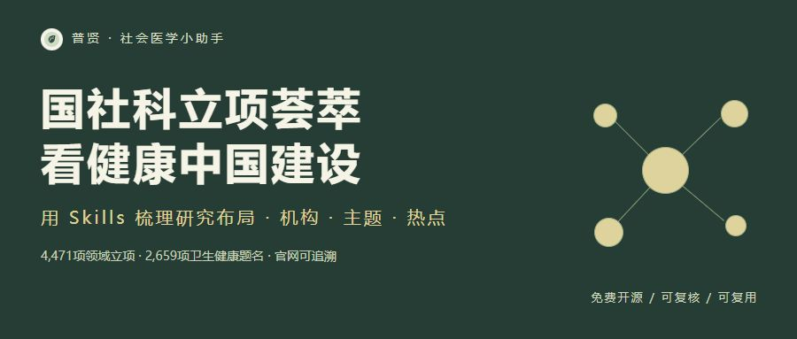

国社科立项荟萃：从科研布局看健康中国建设
摘要： 用Skills荟萃国家社科基金正式立项，梳理健康中国建设相关的研究布局。4,471项领域项目、2,659项卫生健康题名，机构、主题词与热点分析均可回溯官网来源。
健康中国建设，涉及医疗服务，也涉及健康保障、公共卫生、老龄照护、健康公平和社会治理。2016年发布的《“健康中国2030”规划纲要》强调以人民健康为中心，将健康纳入各项政策，面向全人群和生命全过程改善健康。围绕这些任务，社会科学研究关注了哪些问题？哪些机构持续投入？议题又怎样演变？
普贤·社会医学小助手新增“国社科正式立项荟萃与分析”Skills，把分散在官网PDF、Excel中的正式立项，汇集成可检索、可下载、可复核的研究地图，帮助研究者观察健康中国建设相关的科研布局。
以正式立项为线索，观察研究如何回应健康中国建设
本次检索范围为2016—2026年，关注社会医学与卫生事业管理、公共事业管理、健康治理及相关公共服务议题。
从22份主管部门或高校官网来源文件、38个年度批次的60,578条公开立项元数据中，按题名规则筛入并去重后，得到4,471项领域相关正式项目，涉及726个保留原层级的机构名称。其中，2,659项命中卫生健康题名规则，部分与公共事业治理交叉。
本期仅展示项目年份、题名、责任单位、类别与官网来源。
健康中国建设相关研究，关注哪些问题？
在上述2,659项卫生健康题名项目中，按多标签主题规则可看到：
- 老龄养老与长期照护：1,073项。 为观察老龄社会中的养老服务、照护供给与健康支持提供研究线索。
- 医疗卫生服务与医改：426项。 可继续梳理医疗服务组织、卫生服务体系与医改议题。
- 公共卫生与应急：353项。 可用于定位疾病防控、公共卫生服务与应急相关研究。
- 健康公平与社会决定因素：203项。 为阅读健康差异、健康促进及社会环境相关研究提供入口。
- 医疗保障与支付改革：107项；心理健康与社会心理服务：90项。 便于进一步追踪健康保障和心理健康服务议题。
这些是题名主题频次，标签可以交叉，不能相加为项目总数。题名只提供问题线索，具体研究设计与结论仍须阅读项目成果。
在可比的全国年度重点、一般、青年批次中，老龄养老与长期照护题名的每千项立项频次，由2018—2020年的16.94上升至2023—2025年的23.84；人口生育与托育由3.85上升至7.77。分母分别为同期全学科13,758项和15,182项正式立项。它们反映研究题名构成的变化，适合继续追问人口结构、服务供给与治理安排如何成为研究问题。
2016—2026：33项代表性立项选读
每年选取3项健康中国相关议题的正式立项，展示题名、机构、类别和官网来源。按年份与议题选读，不据此推断同年政策对项目的因果影响。
2016年
- 健康中国：《建设健康中国问题研究》。上海工程技术大学；一般项目。官网来源 · 正式名单。
- 分级诊疗：《“健康中国”战略下分级诊疗制度建设的法律问题研究》。上海财经大学；一般项目。官网来源 · 正式名单。
- 农村公共卫生：《M—HEALTH导向下农村公共卫生服务供给侧创新研究》。湖南农业大学；一般项目。官网来源 · 正式名单。
2017年
- 公共卫生服务：《社区公共卫生服务集团化供给的关系结构与治理研究》。温州医科大学；重点项目。官网来源 · 正式名单。
- 围产期心理健康：《“全面两孩”政策下女性围产期心理健康状况的发展轨迹、预测模型及干预研究》。山东大学；一般项目。官网来源 · 正式名单。
- 劳动与健康：《健康中国视域下农民工过度劳动与规制的跨层次研究》。岭南师范学院；一般项目。官网来源 · 正式名单。
2018年
- 长期照护：《健康中国视阈下失能老人长期照护体系协同治理研究》。南京医科大学；一般项目。官网来源 · 正式名单。
- 长期护理保险：《我国长期护理保险体系建设研究》。中国社会科学院；一般项目。官网来源 · 正式名单。
- 健康信息保护：《健康中国战略背景下个人健康医疗信息保护与利用研究》。滨州医学院；一般项目。官网来源 · 正式名单。
2019年
- 基本医疗保险：《健康中国战略下全民基本医疗保险制度实施路径研究》。常熟理工学院；青年项目。官网来源 · 正式名单。
- 长护筹资：《代际均衡视角下我国长期护理保险筹资的政策模拟与动态优化研究》。华东理工大学；青年项目。官网来源 · 正式名单。
- 安宁疗护：《“健康中国”战略背景下中国特色安宁疗护服务体系构建研究》。山东大学；一般项目。官网来源 · 正式名单。
2020年
- 疾控体系治理：《整体性治理视域下我国疾控体系的碎片化与治理现代化研究》。湖北省疾病预防控制中心；一般项目。官网来源 · 正式名单。
- 生育支持：《儿童综合支援计划提升中国生育率的机理、效果与制度架构研究》。南京财经大学；重点项目。官网来源 · 正式名单。
- 公共卫生法治：《防控突发公共卫生事件的刑法对策研究》。北京师范大学；重点项目。官网来源 · 正式名单。
2021年
- 健康饮食与干预：《健康中国行动背景下我国居民健康饮食决策与干预策略研究》。曲阜师范大学；重点项目。官网来源 · 正式名单。
- 公共卫生监管：《我国重大突发公共卫生事件政府监管体系与监管政策优化研究》。浙江财经大学；重点项目。官网来源 · 正式名单。
- 信息贫困与健康：《健康中国战略下信息贫困群体健康焦虑问题及其疏导行动研究》。杭州电子科技大学；重点项目。官网来源 · 正式名单。
2022年
- DRG/DIP支付改革：《推动我国DRG/DIP医保支付方式改革的制度成本控制与路径优化研究》。天津工业大学；一般项目。官网来源 · 正式名单。
- 青少年心理健康：《家校社协同视角下城市在校青少年心理健康问题的预防与干预机制建设研究》。上海大学；重点项目。官网来源 · 正式名单。
- 公共卫生韧性：《计算社会科学赋能城市公共卫生风险动态研判与韧性治理研究》。湖南省社会科学院；一般项目。官网来源 · 正式名单。
2023年
- 生育支持：《低生育率背景下中国生育支持政策体系构建研究》。中国人民大学；重点项目。官网来源 · 正式名单。
- 心理健康预警：《基于大数据的突发事件下社会心理健康监测和预警研究》。上海大学；一般项目。官网来源 · 正式名单。
- 长期照护供需：《推进长期护理保险政策背景下长期照护的市场供需关系研究》。电子科技大学；一般项目。官网来源 · 正式名单。
2024年
- 医疗资源下沉：《数智技术驱动优质医疗资源扩容下沉的新模式、评估体系与推进路径研究》。浙江工业大学；一般项目。官网来源 · 正式名单。
- 数字适应与心理健康：《数字适应促进老年人心理健康的内在机制与实现路径研究》。北京师范大学；一般项目。官网来源 · 正式名单。
- 数智健康管理：《数智化平台驱动健康管理行为的激励机制与引导策略研究》。上海大学；一般项目。官网来源 · 正式名单。
2025年
- 公共卫生敏捷治理：《数字新质生产力驱动特大城市公共卫生安全风险敏捷治理的机制与路径研究》。南方医科大学；一般项目。官网来源 · 正式名单。
- 长护制度可持续：《资源配置视域下长期护理保险制度可持续发展研究》。南开大学；一般项目。官网来源 · 正式名单。
- 医保与医养资源：《医保支付方式改革驱动城乡医养资源均衡配置的激励机制及引导政策研究》。湖南大学；一般项目。官网来源 · 正式名单。
2026年
- 全民健康数智化：《推进全民健康数智化建设的政策保障研究》。北京协和医学院；重大专项。官网来源 · 正式名单。
- 全生命周期人口服务：《构建覆盖全人群、全生命周期的人口服务体系研究》。中国人民大学；重大专项。官网来源 · 正式名单。
- 社会心理服务：《健全社会心理服务体系和危机干预机制研究》。辽宁师范大学；重大专项。官网来源 · 正式名单。
2026年示例来自已核实的重大专项，不能把它当作年度重点、一般、青年名单完整公布。
热点事件线：把政策背景与立项记录放在一起
机构图：哪些责任单位在本库中出现较多？
图2｜卫生健康题名子集2,659项，涉及579个机构名称；展示频次前12个责任单位。每个项目全计数，学院、附属医院及历史校名不自动归并。
在当前覆盖中，北京大学45项、上海交通大学41项、中山大学37项。机构频次适合寻找团队和阅读线索，不能替代质量排名或申报成功率。
热力图：逐年观察七类健康研究议题
图3｜仅使用已核对全国条数的年度重点、一般、青年批次。格内为卫生健康题名子集中各主题的项目数，颜色为每千项全学科年度立项的命中频次。主题可交叉；2026灰格表示缺失，不表示零立项。
在本图卫生健康子集的年度批次中，公共卫生与应急题名由2019年的8项增至2020年的85项，2021年83项、2022年73项。时间上与疫情应对背景并列阅读，不能据此估计事件的因果效应。2026已取得的重大专项不混入年度比较。上一节跨时期频次来自领域主库；本图限定卫生健康题名子集，数值应按图注范围阅读。
荟萃图：研究主题如何交叉标注？
图4｜节点面积表示主题项目数，边宽表示同题共现数，仅绘制共现至少10项的主题对。位置仅用于排版。部分共同标注源于词表规则重叠，不表示已验证跨领域机制；这不是效应量Meta分析。
七组主题将健康服务、保障、公共卫生、老龄照护、生育托育、心理健康与健康公平放在同一张阅读地图中。图中联系需要回到原题名和项目成果继续核验。
下载四张图、可编辑SVG/PDF和不含PI姓名的源数据 · 查看代表项目与图表口径
使用本 Skills，就能完成怎样的荟萃？
- 汇集正式来源。 检索主管部门正式立项公告；原链接失效时，核对高校官网保存的同一名单。
- 整理项目证据。 下载公开名单、提取PDF和Excel字段，核对哈希与批次条数，保留来源与缺口。
- 分析机构与议题。 按明确规则去重，保留机构原层级，生成机构分布、主题词和关键词共现。
- 观察健康中国建设相关研究布局。 以医疗保障、卫生服务、公共卫生、老龄照护、心理健康和健康公平等议题为线索，在可比批次中观察热点变化，输出可复核报告。
你可以用它建立健康中国建设专题阅读清单、寻找研究团队、梳理议题演变。网站另有12份画图与PPT Skills，可将已有数据和成果用于科研图表、技术路线、论文汇报或答辩展示。
安装后，直接给 AI 这段任务
请使用 $nssfc-project-synthesis，荟萃2016—2026年国家社科基金中，社会医学与卫生事业管理、公共事业管理、健康治理领域的正式立项。围绕健康中国建设，梳理医疗保障、卫生服务、公共卫生、老龄照护、心理健康及健康公平等议题的研究布局。尽量检索完整，保留官网公告与附件来源，输出项目表、机构分布、主题词、共现和热点变化报告，并列出覆盖缺口。
技能包内含SKILL.md、Python提取与分析脚本、依赖和经核验的来源清单。将解压后的nssfc-project-synthesis目录放入所用AI助手的技能目录；Codex可使用~/.codex/skills/。需要AI助手支持Skills、联网检索与Python执行，并按说明安装依赖。既有来源可复现，新年份仍须核验新增正式公告和附件。
也可直接打开在线立项图谱，按年份、类别、机构、主题或关键词筛选，下载当前结果与完整数据。
覆盖与解释
2016—2025年度重点、一般、青年全国批次已按正式名单条数核对。2026年当前只收录已核实的正式重大专项，年度公示不计入。 西部2017年、后期2021—2023年及2026年、教育学/艺术学/军事学单列和其他专项仍有缺口。题名筛选可能漏检或出现边界条目。
立项记录呈现研究关注与科研布局，不能直接衡量健康中国建设成效。评价建设进展，还需结合健康结果、服务可及性、保障水平等实际数据。主题与关键词为本站标注；机构频次不能视为综合实力排名或申报成功率。热点荟萃是描述性汇聚，不是效应量Meta分析。
把正式立项、研究主题与官网来源放在一起，为理解健康中国建设提供可复核的科研线索。
使用入口
数据及覆盖更新：2026-10-24。公众号排版建议：封面使用横版宣传图，正文按上述段落粘贴，文末放立项图谱二维码；下载链接可放在“阅读原文”。